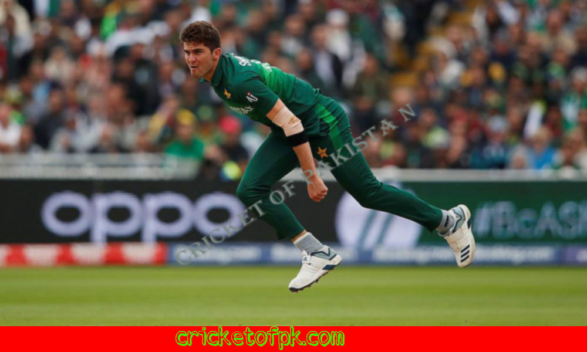

Pakistan is a country rich in history and culture, with a long and illustrious bowling history. Dating back to over 1,500 years ago, the sport of bowling has been played around the world. Pakistan has produced some of the world's most illustrious bowlers, including Wasim Akram, Waqar Younis, and Shoaib Akhtar. Bowlers in Pakistan have often been labeled as "badminton players with balls" due to their unique style of bowling. Today, Pakistan is one of the world's leading cricketing nations, and the sport of bowling continues to be played by many in the country. Bowlers in Pakistan often specialize in one or more forms of bowling, such as Twenty20, 50-over cricket, or traditional ten-pin bowling. There is also a growing trend of female bowlers in Pakistan, who are proving to be some of the country's most successful athletes. With so much history and talent behind it, bowling in Pakistan is a sport that is sure to be enjoyed by many in the future.
Pakistan is known for its high quality bowling, with several international bowlers hailing from the country. Bowlers in Pakistan have to contend with a number of different surfaces, including concrete, asphalt, and hardwood. There are also a number of variations on the game available, such as five-pin bowling and ten-pin bowling. Pakistan has produced some of the world's top bowlers, including Shoaib Malik, Imran Khan, and Wasim Akram.
Pakistan is one of the most popular bowling destinations in the world. The country has a rich bowling history that dates back to the 1700s. Bowlers from Pakistan have won numerous accolades, including a record 59 medals at the World Championships. Pakistan is also home to some of the most prestigious bowling tournaments in the world, including the Pakistan Super League and the Mohammed Ali Trophy. There are dozens of bowling centres in Pakistan, each with its own unique atmosphere and features. You can bowl in either indoor or outdoor conditions, and many centres offer special discounts for students and seniors. Bowlers can also enjoy a variety of food and drink options at the centres.
Fast Bowler
There’s something undeniably satisfying about knocking down a few pins with a Fast Bowler in your lineup. These athletes are able to throw the ball at a high speed, which allows them to get the ball into the pocket as quickly as possible. This quickness can be a huge advantage, as it allows them to put pressure on the other team and take away their strike zone.
Looking to add a new activity to your weekly routine? Bowling is a great choice! Not only is it a fun activity, but it also helps improve your coordination and overall motor skills. Plus, it's a great way to get in some exercise. If you're new to bowling, be sure to check out our guide on how to bowl. This will help you get started on the right foot. Once you have some basics down, feel free to explore our extensive selection of bowling lanes and equipment. If you're looking for a challenge, try our advanced bowling leagues. These leagues offer a higher level of competition and are perfect for those who are looking for a real challenge.
There are a number of Fast Bowlers in the world, each with their own unique style and ability to take wickets. Some of the more well-known Fast Bowlers include Mitchell Johnson, Mitchell Starc, Dale Steyn, and Chris Woakes. Whether it's taking quick wickets in the early stages of a game or later in the innings, these Fast Bowlers are key to any team's success. They can take the pressure off the other players and help to seize control of the game. Whether you're a fan of cricket or not, it's worth taking a look at the speedsters who are currently playing the game. You may be surprised at just how talented some of these bowlers are.
Spin Bowler
The Spin Bowler is a unique type of bowler who relies on the spin of the ball to create movement. Compared to other bowlers, the Spin Bowler has a higher chance of achieving a higher score.
A Spin Bowler is a type of bowler who uses a spinning motion to generate spin on the ball. This spin helps the bowler control the ball more, which can result in more accurate shots. Spin bowling is especially effective in narrow lanes, where the ball can swing more and be harder to hit.
A Spin Bowler is a bowler who uses the spin of the ball to make it harder to hit. They are especially useful in slow-pitch environments, such as in tournaments. Spin bowling is a very difficult skill to master, and most Spin Bowlers rely on a lot of practice to perfect their technique.
Bowling

Faraz Ahmed Khan
Bowling
About Us
Cricket of Pakistan is a project of Express Media Group. This website provides its viewers with the latest news in the cricket world. Moreover, Cricket of Pakistan is the first cricket portal where you can read news in this site. The site primarily focuses on providing the latest news and information on Pakistani cricket, both at the international and snational level.


@copyright 2022 Cricket of pakistan